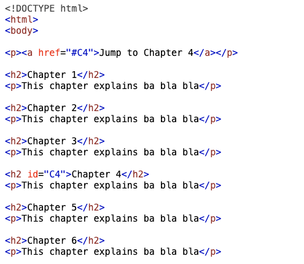

Understanding the best practices associated with using "Classes" and "IDs"
Tech Blog Post 19 January 2023
What is Classes and IDS
We can not discuss the best practices associated with using "classes" and "IDs" without going through what Classes and IDs are. In CSS, selectors are used to target a specific element or range of elements of a HTML/website. Using these target/s, CSS is able to apply a set of styles to that element. The two most common selectors are "class" and "ID" in which both are used to target elements to which a style is to be applied.
Class Selector
A class selector is used to define a style rule that applies to any element with an attribute equal to the assigned value. This means that class attributes can be applied to multiple elements and any elements that share this attibutes are targetted to the styles you have defined in CSS. Here is an example of when class is used:
Notice the class value "note" is used in 3 different elements. This code will set the font size and color of the elements "note" class is targeting to 120% and red respectively. The output of the code will be like this:
We can see the power of using one class selector to manipulate multiple elements. However, there are some limitations to what the class selector can do and this is where the ID selector can shine.
ID selector
Unlike class selector, ID selector can only target a single element on a web page. This means that in a web page, there can only be one element that a unique ID attribute can target. Here is an example of when ID is used:
In this example we can see the h1 element being targeted using the ID attribute and style was applied. This "myheader" ID is now unique to that web page and can not be used again in this web page. Now you may ask, why wouldn't you just use the class selector for all targeting? As discussed earlier, ID selectors have special functions which Class selectors can't perform. In a web page, ID selector can be used by the web page to navigate to that specific location of the webpage. Say you assigned an ID attribute to an element, you are able to navigate to that specific element using a special URL link. Here is an example where we can use this function:
ID selectors are often used by JavaScript, in which the javascript functions can specifically target an element on a web page. Classes target multiple elements on a web page so it is not very useful when requesting a function to a specific element using JavaScript.
Best Practices associated with using "Classes" vs. "IDs"
Classes and IDs are vital selectors in creating a web page. At first, because of the similarity, it is difficult to understand when to use IDs versus Classes and at times it is hard to see the differences in output/results. Although, there is no hard rule against using only IDs all throughout the web page, it is good practice to minimize the use of IDs as much as possible. IDs should only be used in situations where you want to apply a style to one specific element only, bookmark a specific part of the web page, or work with JavaScript on a specific element, while Classes can be used to style multiple elements at once. If it is difficult to understand the differences in the early stages of a development career, it is important to, no matter which you choose, be sure to identify the element(s) you are referencing clearly.
In this blog, we talked about what the "Class" and "IDs" selectors are, what the differences are and the best practices around which to use. The only way for us to fully grasp the concept is for us to apply it in our continuously developing coding life.